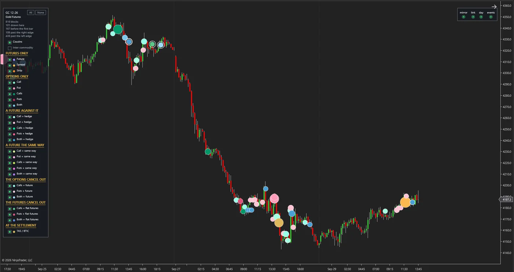
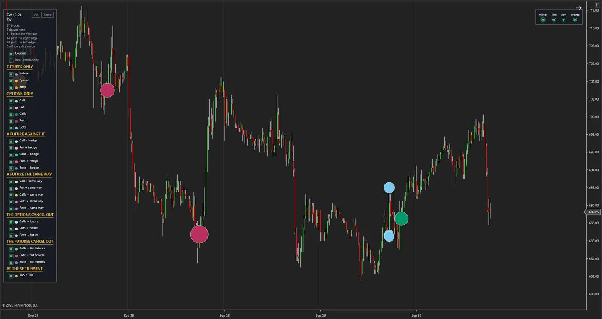
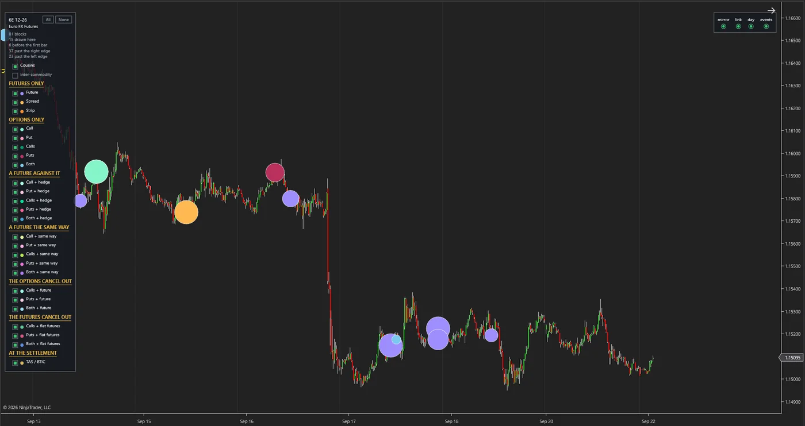

Einführung
Die größten Trades am Futures-Markt finden nicht auf dem Bildschirm statt. Zwei große Institutionen einigen sich abseits des Orderbuchs auf Preis und Größe, und der Markt erfährt davon erst einige Minuten später, in einer kurzen Meldung. Sie heißen Blocktrades. In den Kerzen und im Volumen, die ein Trader auf dem Chart sieht, hinterlassen sie keine Spur, und nur wenige fragen, was dieses große Geld tut und wie sich der Markt danach verhält.
Wir haben beschlossen zu verstehen, wie sich diese Trades verhalten, und sind dafür zuerst selbst zum Lieferanten ihrer Daten geworden.
Das Projekt BlockTrade hat einen Datendienst, der in Betrieb ist. Unser Server empfängt und verarbeitet ohne Unterbrechung die Blocktrades jedes Produkts der Chicagoer Börse und liefert sie auf den Chart des Traders. Jeder Block trifft im Median 36 Sekunden nach der Meldung der Börse ein, und die Historie baut sich Tag für Tag auf. Das Ziel sind Handels- und Anlagealgorithmen, die auf der Verhaltensanalyse genau dieser Blöcke aufbauen.
Einblick ins Anzeigewerkzeug
Das sind echte Bildschirmaufnahmen aus dem Anzeigewerkzeug des Projekts, keine Mock-ups. Jeder Kreis ist ein Blocktrade, eingetragen auf dem 15-Minuten-Chart seines eigenen Assets, und seine Farbe zeigt die Form des Trades. Klicken Sie auf das Bild, um es zu vergrößern.



Gold-Futures: 816 aufgezeichnete Blöcke, davon 101 in diesem Zeitraum eingezeichnet. Die Legende neben dem Chart führt die Formen in Gruppen auf: nur Futures, nur Optionen und Kombinationen aus beiden.
Weizen-Futures: 57 aufgezeichnete Blöcke, davon 7 in diesem Zeitraum eingezeichnet.
Euro FX Futures: 81 aufgezeichnete Blöcke, davon 15 in diesem Zeitraum eingezeichnet.
Ansatz
Zuerst machen wir uns die Daten zu eigen, dann lernen wir das Verhalten kennen, und schließlich bauen wir auf diesem Wissen Algorithmen.
-
Vom Markt zu unseren eigenen Daten
Unser dedizierter Server empfängt die Meldungen der Börse während des gesamten Handelstags, zeichnet sie unverändert auf und liefert sie über ein dediziertes Gateway an die Abnehmer aus. Auf dieser Stufe sind wir der Lieferant der Daten, nicht ihr Kunde. Diese Stufe ist gebaut und funktioniert.
-
Von den Daten zur Verhaltensanalyse
Jeder Block erhält eine feste Identität, fällt in eine von 24 definierten Formen und wird seinem eigenen Asset zugeordnet. Auch jede Korrektur, jede Rücknahme und jede Rückkehr eines Trades wird aufgezeichnet, mit der genauen Zeit. Auf dieser Grundlage messen wir, in welcher Situation jede Blockform auftritt und was der Markt danach tut.
-
Von der Verhaltensanalyse zum Algorithmus
Erkenntnisse, die im Test auf der Historie Bestand haben, werden wir in Handels- und Anlageregeln überführen. Wie in allen unseren Projekten werden sie in einem Simulator und zu realen Kosten getestet, nicht auf dem Papier. Diese Algorithmen wird dasselbe Gateway speisen, das auch den Chart speist.
Was heraussticht
-
Das Ziel ist, Verhalten zu verstehen, nicht Daten anzuzeigen.
Einen Block auf dem Chart zu sehen, ergibt für sich allein noch keine Entscheidung. Wir suchen das wiederkehrende Muster: welche Form eines großen Trades in welcher Situation mit welcher Folge einhergeht. Das Anzeigewerkzeug ist das erste Ergebnis dieses Weges, nicht sein Ende.
-
Wir liefern die Daten; wir sind nicht ihr Kunde.
Verhaltensanalyse braucht Daten, die vollständig, pünktlich und in unserer eigenen Hand sind. Wir haben die Kette vom Empfang bis zur Auslieferung selbst gebaut und betreiben sie selbst. Qualität und Zeitpunkt dessen, was die Analyse und den Algorithmus erreicht, stehen unter unserer Kontrolle.
-
Wir haben das Verhalten des Marktes, nicht nur die Liste zum Tagesende.
Die Liste zum Tagesende sagt nicht, was mitten am Tag korrigiert oder zurückgenommen wurde oder verschwand und wiederkam. Unser Dienst bewahrt all das auf, und diese Details sind der Rohstoff der Verhaltensanalyse. Diese Historie wächst jeden Tag und lässt sich später nicht noch einmal aufzeichnen.
-
Eine gemeinsame Sprache für große Trades.
Blocktrades reichen vom einzelnen Kontrakt bis zu mehrbeinigen Optionskombinationen. Wir haben sie in 24 klar definierte Formen eingeteilt, und diese Klassifizierung wurde an allen aufgezeichneten Daten getestet. Ohne diese Sprache lässt sich das Verhalten von Blöcken nicht vergleichen.
-
Analyse, die nicht auf einer versteckten Vermutung aufbaut.
Ein Blocktrade hat Käufer und Verkäufer zugleich, und eine Richtung wird für ihn nicht gemeldet. Unser Dienst nennt die Art des Trades und erfindet keine Richtung; wo er einen Block nicht erkennen kann, sagt er genau das. Jede richtungsbezogene Lesart in unserer Analyse wird gesondert erscheinen, unter der Bezeichnung „Indiz“.
-
Infrastruktur, die für mehrere Abnehmer bereit ist.
Mehrere unabhängige Rechner werden aus einem Feed gespeist, jeder mit eigenem Zugang. Jede Nacht gehen die Daten in einen Speicher außerhalb des Servers, und die beiden Kopien werden miteinander abgeglichen. Einen Algorithmus als neuen Abnehmer hinzuzufügen, erfordert keine neue Infrastrukturarbeit.
Der weitere Weg
-
Erledigt
Der Empfangsserver, die Verarbeitungs- und Klassifizierungsschicht, das Auslieferungs-Gateway, das Backup und das Anzeigewerkzeug sind gebaut und getestet.
-
Erledigt
Die Regeln zur Erkennung von Verhalten wurden durch Live-Beobachtung des Marktes vervollständigt, und die Historie baut sich Tag für Tag auf.
-
Aktuell
Die Verhaltensanalyse der Blöcke und das Testen von Handelshypothesen auf genau dieser Historie.
-
Letzter Schritt
Der letzte Schritt sind Handels- und Anlagealgorithmen, die die Spur des großen Geldes in ihren Entscheidungen nutzen.
Technologie
Die Empfangsschicht, die Verarbeitung und das Auslieferungs-Gateway sind in Python auf einem dedizierten Linux-Server geschrieben, das Anzeigewerkzeug in C#. Der Dienst läuft ohne Unterbrechung und protokolliert alle zehn Minuten seinen eigenen Zustand. Jede Änderung durchläuft die automatisierten Tests, und jede Nacht wird das Backup mit dem Original abgeglichen.